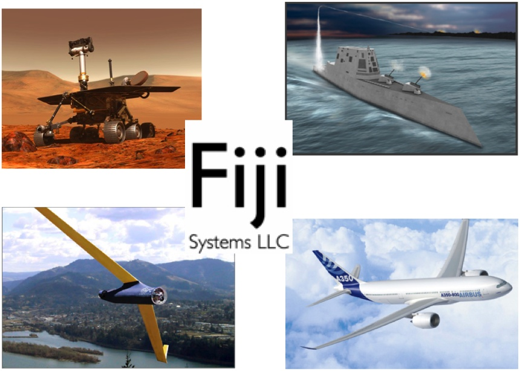

Filip Pizlo and Luke Ziarek, two Purdue students who worked on the NSF-funded Ovm project, have leveraged their expertise in virutal machine technology to start Fiji Systems LLC. The company is a NSF SBIR funded startup specializing in Java solutions for safety-critical and mixed-criticality avionics systems. The students' key accomplishments include the first deployed real-time Java virtual machine on the Boeing-Insitu ScanEagle UAV and a collaboration with the European Space Agency to evaluate real-time Java for Aerospace applications. Currently they are working on turning our research into a small, simple, high-performance product, called the Fiji VM.

Java is, arguably, the most widely used computer programming language in the broader IT industry. The value proposition for Java in avionics is as follows. Avionics systems are increasing in complexity, in particular due to the steadily increasing role of software, and the need for more scalable approaches to avionics design is reaching critical mass. We see Java as the next step in the evolution of avionics, given its inherent safety guarantees which will enable quicker certification, as well as its natural ability to support hardware partitioning to allow mixed-criticality software to run on a single CPU without requiring additional hardware or operating system support. With the Fiji VM technology, both safety-critical vehicle software, and higher-level mission software may be written in Java, with partitioning being provided statically by the language. Developers may choose between using only minimal Java features (as would be appropriate for vehicle systems) or using the standard Java libraries for various high-level algorithms (for mission systems).
The Fiji VM technology is stable and supports a wide variety of platforms, including PowerPC platforms like what is used in the F-35. Pperformance exceeds that of the leading commercial real-time Java systems from IBM and Sun, while supporting smaller hardware platforms. Fiji VM has already been demonstrated running full Java software,with real-time support enabled, on systems ranging from embedded hardware running RTEMS (Real Time Executive for Multiprocessor Systems used by the European Space Agency) to large multi-processor Linux server systems.